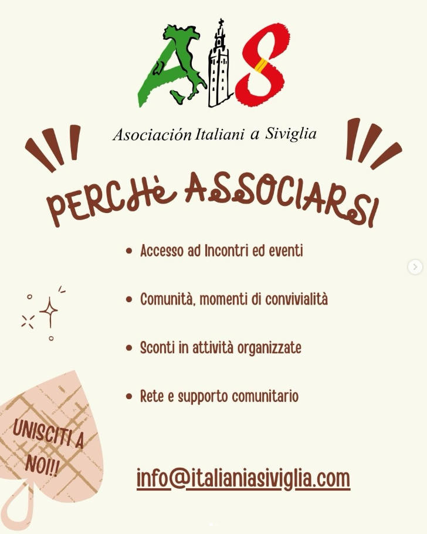
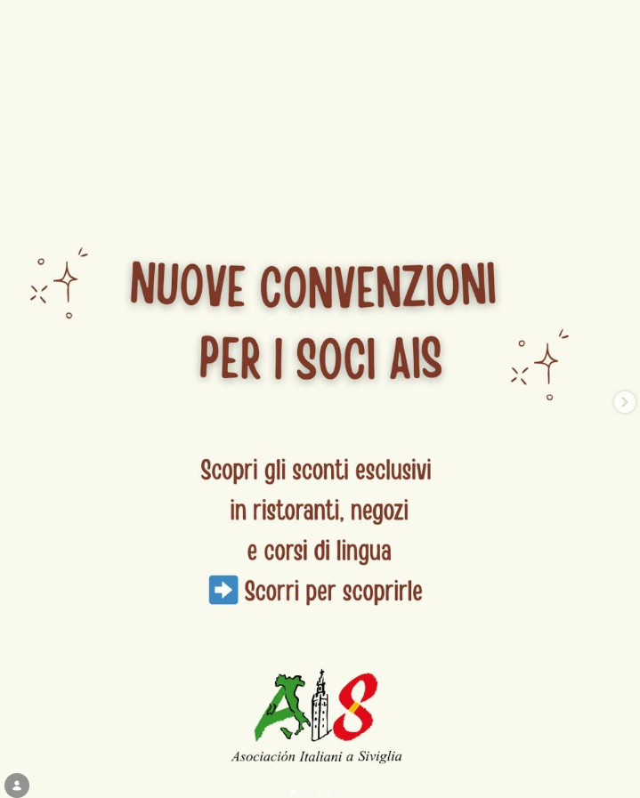
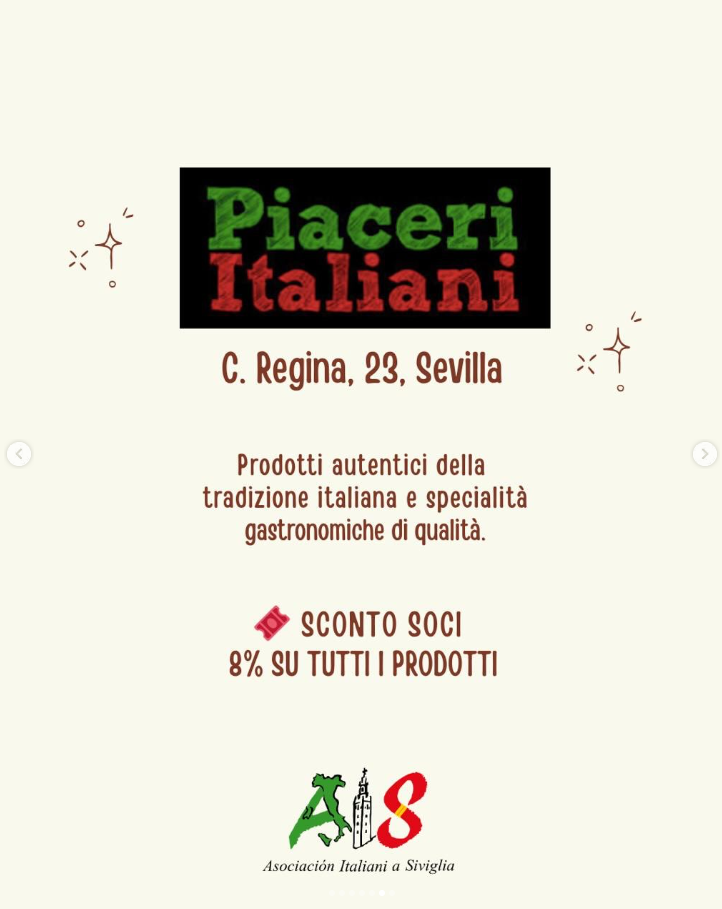
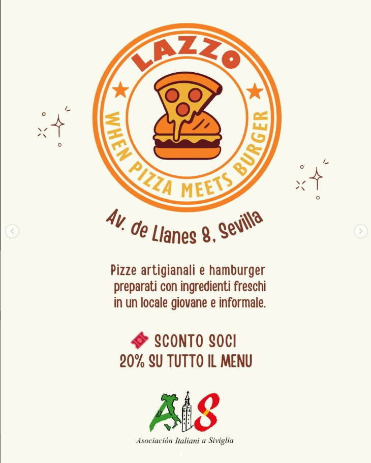
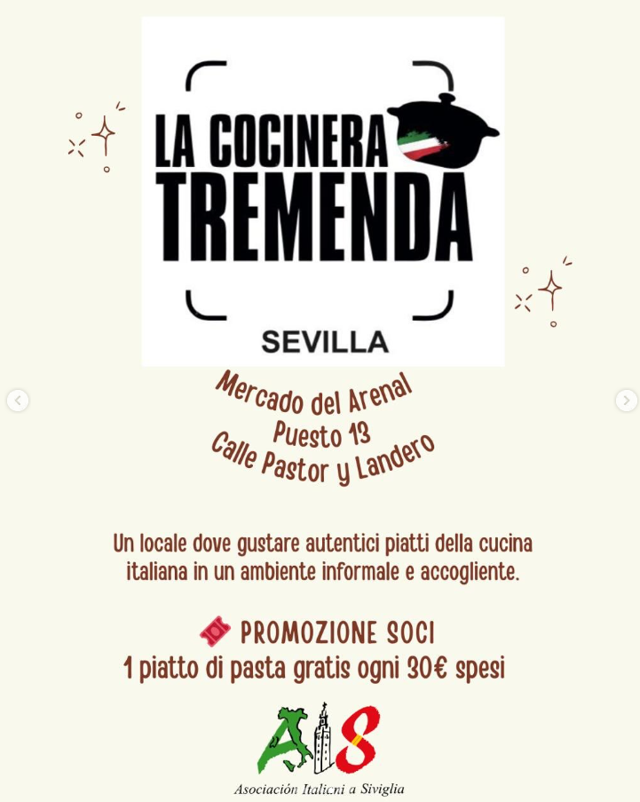
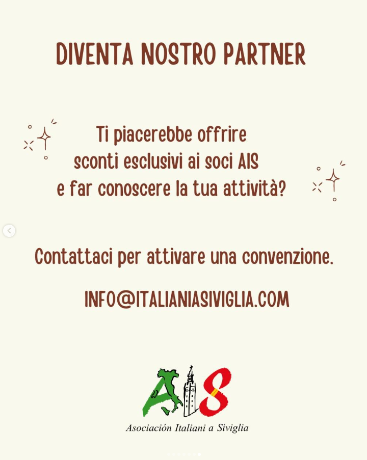

La comunidad italiana de Sevilla
Encuentros, cultura, gastronomía y ayuda práctica para quien vive el italiano en Sevilla.
Próximos eventos
Encuentro literario: «Il resto di niente»
X Feria de Italia
Excursión a Baelo Claudia
Ventajas para socios
Descuentos reales en comercios y servicios de Sevilla, negociados por la asociación para quien tiene el carnet.

los productos

la carta

los servicios

3 clases gratis
La Feria de Italia
Dos días de gastronomía, música, teatro, cultura y recreaciones históricas italianas en el corazón de Sevilla. Entrada gratuita.
Organizada con el Ayuntamiento de Sevilla. Avalada por el Consolato Generale d'Italia a Madrid y el Com.It.Es. Madrid.
Qué hacemos
¿Acabas de llegar a Sevilla?
Los trámites explicados por quien ya los ha hecho, sin lenguaje administrativo.
Por qué hacerte socio
La cuota sostiene los eventos, la Feria y las actividades para las familias. Y te abre la puerta a todo lo demás.
Acceso a encuentros y eventosComunidad y momentos de convivenciaDescuentos en actividades organizadasRed y apoyo comunitarioEn Instagram






La comunità italiana di Siviglia
Incontri, cultura, gastronomia e aiuto pratico per chi vive l'italiano a Siviglia.
Prossimi eventi
Incontro letterario: «Il resto di niente»
X Feria de Italia
Convenzioni per i soci
Sconti reali in negozi e servizi di Siviglia, negoziati dall'associazione.
3 lezioni gratuite
La Feria de Italia
Due giorni di gastronomia, musica, teatro, cultura e rievocazioni storiche italiane nel cuore di Siviglia. Ingresso gratuito.
Con il Comune di Siviglia. Con il patrocinio del Consolato Generale d'Italia a Madrid e del Com.It.Es. Madrid.
Cosa facciamo
Sei appena arrivato a Siviglia?
Le pratiche spiegate da chi le ha già fatte, senza linguaggio burocratico.
Perché associarsi
Accesso ad incontri ed eventiComunità, momenti di convivialitàSconti in attività organizzateRete e supporto comunitario
info@italianiasiviglia.com